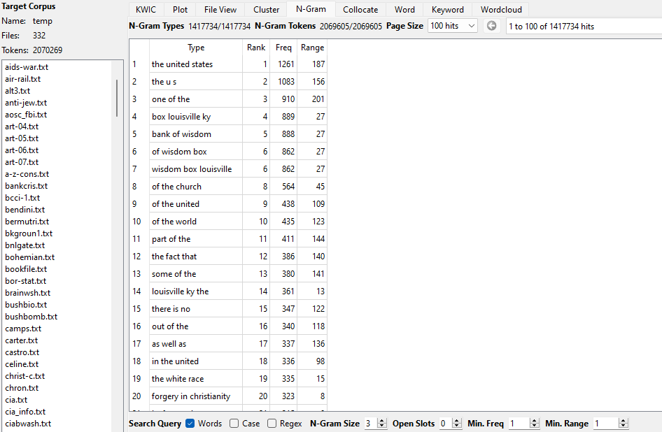
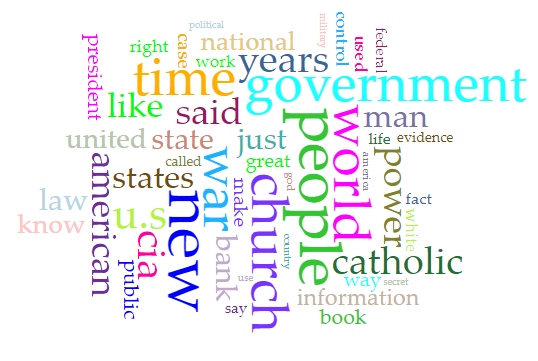
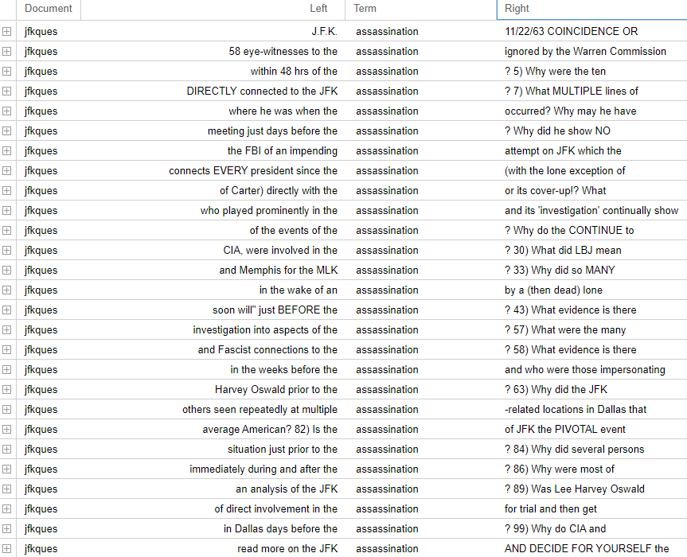
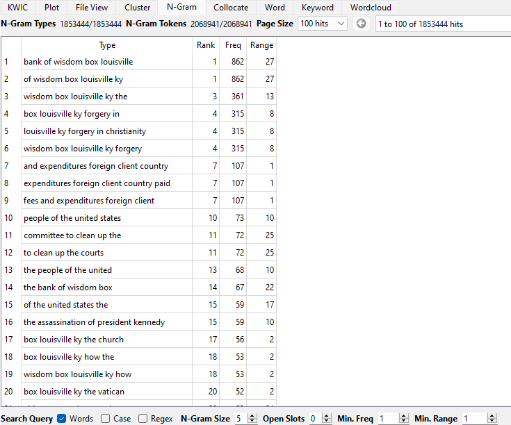
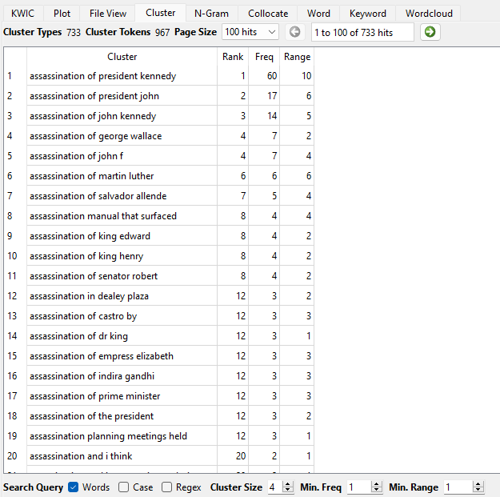
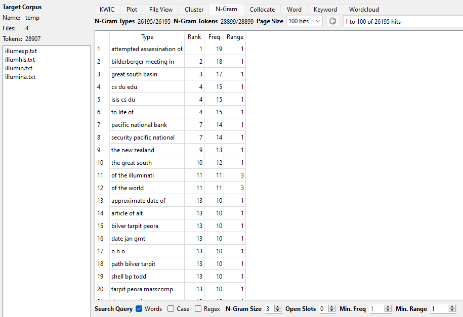
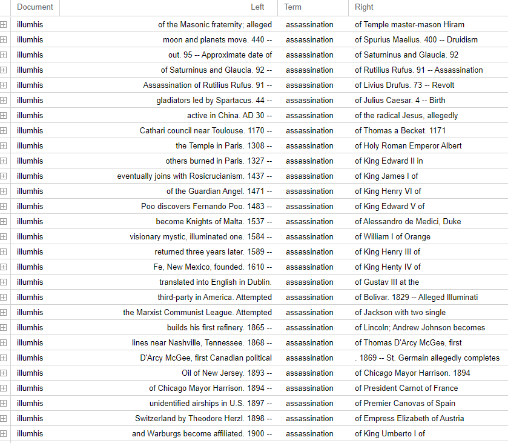
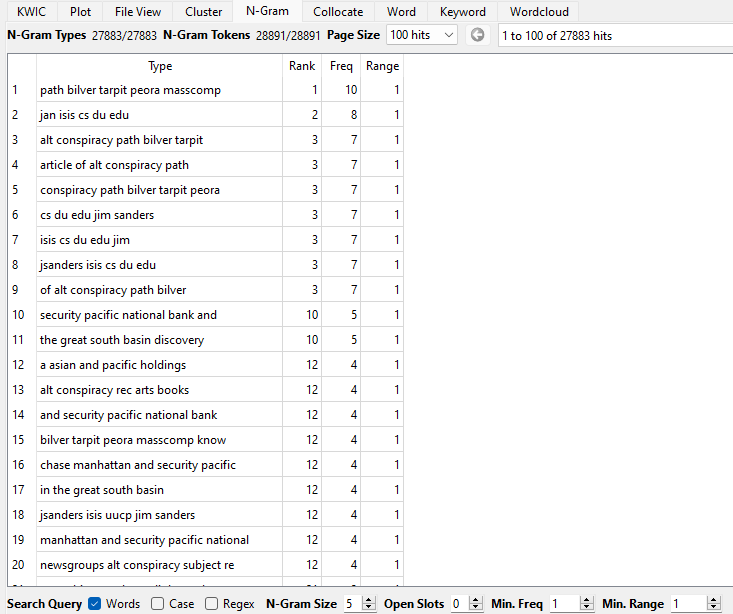
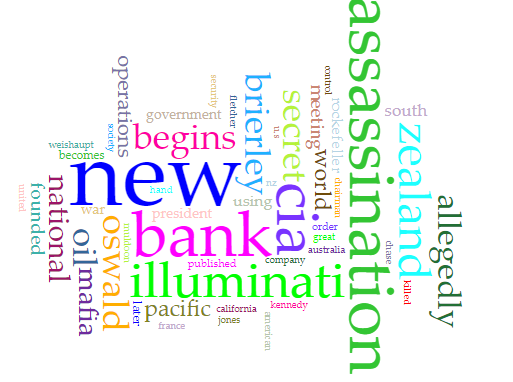
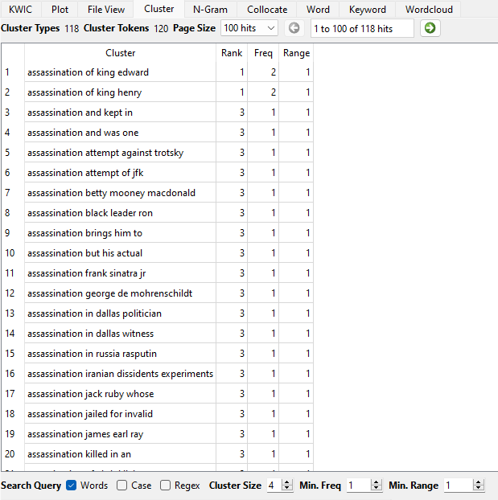

These texts mention the united states a lot, which makes sense since they
are conspiracy theories involving the U.S.

The larger corpus appears to have a large emphasis on the words
"government", "people", and "church" for subjects. This makes sense as this is an
entire list of conspiracy theories and there are countless things that people though
of about the government and the church when forming these theories.

ALL of the uses of the word "assassination" involve JFK in
some way, as every single text is the same "jfkques" text, and most of them mention
JFK in the words nearby.

It seems as though Louisville, Kentucky is a frequent subject for conspiracy
theories, even in this large amount of texts. This "wisdom box" also seems to be
mentioned a lot, could this be some sort of theorertical magical item that is a big
thing?

Looking further into the term "assassination", there seems to be a lot of
different assassinations mentioned, which I could not see through the other way I
was looking into the term, which is interesting.
SMALL TEXT CORPUS

These texts focus on the illuminati, and seem to mention a lot of
assassinations.

The illuminati is definitely something that goes far back, as these texts
mention medieval moments and even old Roman and Greek moments. Whoever came up with
this stuff is definitely on something I think.

It looks like a decent amount of gibberish, but looking closer it ends up
being just some abbreviations and acronyms that looks weird due to no punctuation
being present. There is a lot of ISIS mentioned, as well as Jim
Sanders.

As many people know, the illuminati is a theoretical cult that work in the
government in the shadows. There are many mentions of assassinations and the banks,
and the CIA, and the mafia, and the government.

Looking further into the term "assassination", there are a lot of different
mentions of historical events from medieval times and other political leaders other
than JFK.
A large amount of this analysis dove into the investigation of the term "assassination".
I picked this because deaths of political figures and people of noteriety are of
significant value and can drastically change events in time as opposed to the figure not
being killed. There are a lot of different mentions of assassinations in both corpi, and
JFK seems to be a particularly big mention in a lot of these texts. This makes sense as
many people began to question the government around this time, and many conspiracy
theories began to prop themselves up around that time. The smaller group of texts seems
to mention historical events that are very old and frequently referenced them. The
bigger group of texts seems to mostly mention more recent assassinations rather than
very old ones.